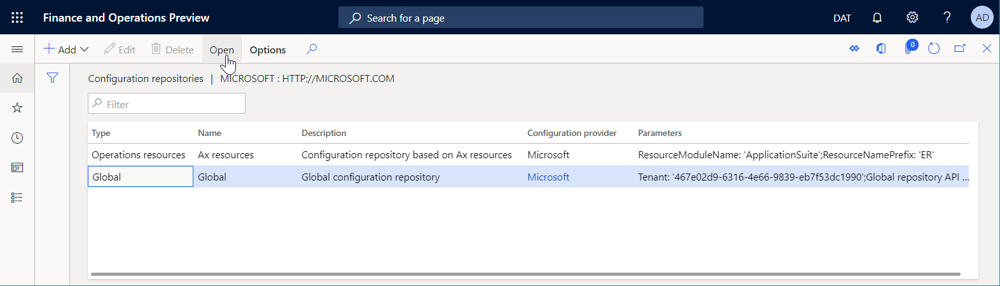

Download ER configurations from the Global repository of Configuration service
This topic explains how to download Electronic reporting (ER) configurations from the Global repository of configuration service. For more information, see Microsoft Dynamics 365 for Finance and Operations - Regulatory Services, Configuration service.
Open configurations repository
Sign in to the Dynamics 365 Finance application using one of the following roles:
- Electronic reporting developer
- Electronic reporting functional consultant
- System administrator
Go to Organization administration > Workspaces > Electronic reporting.
In the Configuration providers section, select the Microsoft tile.
On the Microsoft tile, select Repositories.

On the Configuration repositories page, in the grid, select the existing repository of the Global type. If this repository doesn't appear in the grid, follow these steps:
- Select Add to add a new repository.
- Select Global as the repository type, and then select Create repository.
- If prompted, follow the authorization instructions.
- Enter a name and description for the repository and then select OK to confirm the new repository entry.
- In the grid, select the new repository of the Global type.
Select Open to view the list of ER configurations for the selected repository.

Import a single configuration
On the Configuration repositories page, in the configurations tree, select the ER configuration that you want.
On the Versions FastTab, select the required version of the selected ER configuration.
Select Import to download the selected version from Global repository to the current Finance instance.
Note
The Import button is unavailable for ER configuration versions that are already present in the current Finance instance.

Import filtered configurations
On the Configuration repositories page, in the configurations tree, expand the Filter FastTab.
In the Tags grid, add any tags that are needed.
In the Country/region applicability field, select the appropriate country/region codes, and then select Apply filter.
Note
The Configurations FastTab shows all the configurations that satisfy the specified selection conditions.
On the Configurations FastTab, select Import to download the filtered configurations from the Global repository to the current instance.
On the Configurations FastTab, select Reset filter to clean up the specified selection conditions.

Note
Depending on the ER settings, configurations are validated after they are imported. You might be notified about any inconsistency issues that are discovered. Before you can use the imported configuration version, you must resolve the issues. For more information, see the list of related resources for this topic.
Note
ER configurations can be configured as being dependent on other configurations. Therefore, along with a selected configuration, other configurations might be automatically imported. For more about configuration dependencies, see Define the dependency of ER configurations on other components.